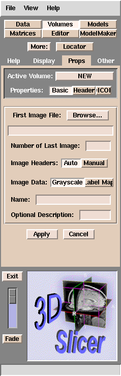
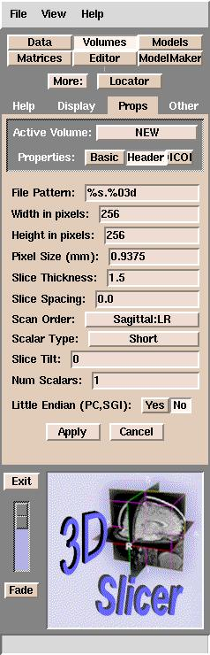
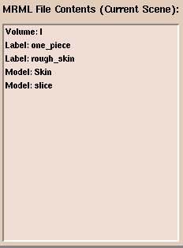

Slicer browser interface
If your data is in DICOM format, hit the right-most Properties: button labelled DICOM (sometimes all of the letters of DICOM dont show up) and
see Using DICOM data with the 3D Slicer
For other data formats hit the Browse ... button. The slicer will open the
browser in the directory where you started running slicer from. When you have
reached the directory where the data is, double-click on one of the images that you want to work on and then hit the Apply button. What the slicer does now
is to try to figure out what kind of data you have so it can properly load and
orient your data in the slicer.
The slicer uses a program called print_header.
to read your data. If print_header works, the slicer will load your data and youwill be able to see your images.
If print_header fails, slicer will display a
message saying to enter the header information manually and the following
panel will be displayed:

Default Slicer header parameters
The parameters above are what is minimally required by the slicer in order to load your data. The slicer uses these parameters to determine the geometry of your data. For example, lets assume you have 60 MR images and the parameters for your data are the same as the default parameters, then we (and the slicer) would know the following about your data:Please note that when you have finished editing your data, the segmented/edited images that the slicer writes out do not contain any header information. The slicer encodes this header information into a mrml file when you save your scene. This file describes the volumes that you have loaded into the slicer and how you have modified them using the slicers tools.
In most cases you will want to load more than one dataset. To load more data, simply repeat the procedure above. Slicer typically will display at one time up to three datasets: a foreground, a background, and a segmented dataset. When the Data tab is active, the datasets that comprise the current scene are displayed in the panel labelled MRML File Contents (Current Scene): which looks like:
